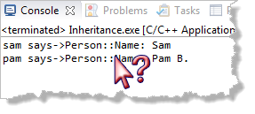

A Perplexing Problem
Change the example (main.cpp) again, so it looks like this:
int main()
{
Person sam = Student("Sam", 201795);
Person pam = Person("Pam B.");
cout << "sam says->" << sam.toString() << endl;
cout << "pam says->" << pam.toString() << endl;
}Now you have two Person objects: one "regular" Person, and one specialized Person who is a Student. It the output the same as previously? No!!!

For the Student sam, you know longer see the ID. And, both the Student and the Person are identified with Person::Name, even though we do have an overridden member function, Student::toString().
Why does this happen? This course content is offered under a
CC
Attribution Non-Commercial license. Content in this course
can be considered under this license unless otherwise noted.
This course content is offered under a
CC
Attribution Non-Commercial license. Content in this course
can be considered under this license unless otherwise noted.